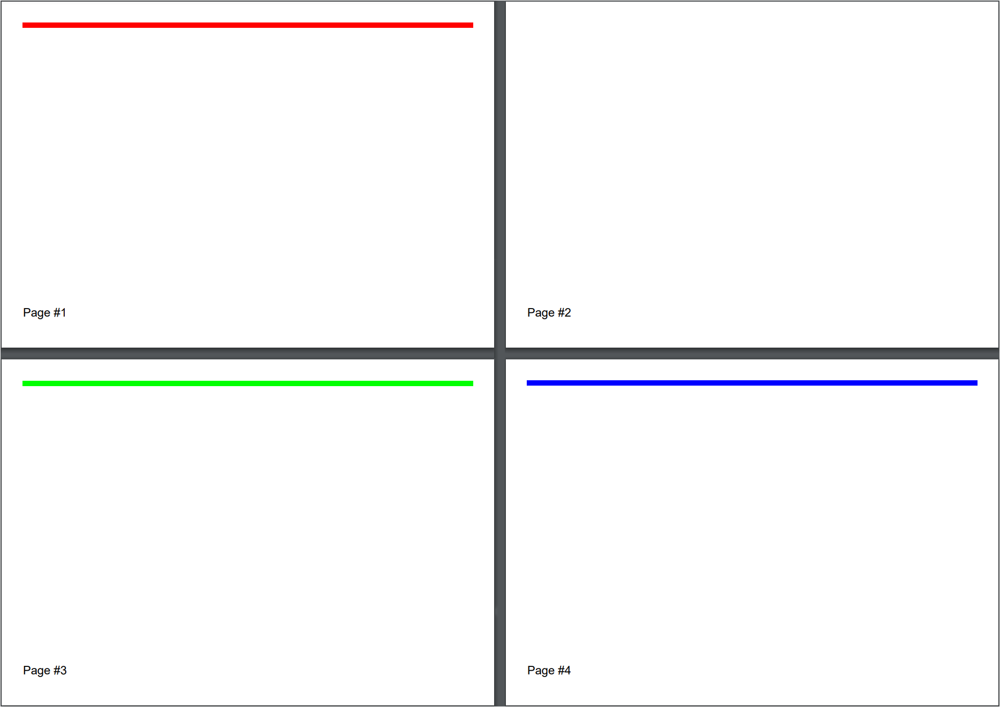

Adding Line
Brief
The article describes how to add and configure a line.
Details
You can add lines to a section and to a
repeating area using methods of the LineExtensions class
and configure line settings using methods of the LineBuilder class.
Each line has the following formatting:
Parameter |
Default value |
Methods for configuration |
Width |
0.5f
|
SetWidth
|
Length |
Equal to the width of the available area |
SetLength
|
Stroke style |
Solid
|
SetStroke
|
Color |
Black
|
SetColor
|
Alignment |
Left
|
SetAlignment
|
Margins - additional margins for a line |
No additional margins |
LineBuilder.SetMargins methods,
SetMarginLeft,
SetMarginTop,
SetMarginRight,
SetMarginBottom.
|
Page break |
No page break |
SetPageBreak
|
Keeping with the next element |
True
|
SetKeepWithNext
|
If you do not specify formatting settings for a line, they will have their default values defined by the default style.
You can create a style and apply it to all lines on the document, section, or repeating area level
using the method SetLineStyle and to particular lines using the method ApplyStyle.
For more on working with styles, see the article Formatting and Styles.
Vertical Lines
If you need to add a vertical line to a section or to a repeating area, you can do this
by specifying the necessary line width in the length parameter and the necessary line height in the
width parameter.
Page Break
When you need to place a line on a new page, insert a page break before the line using the method SetPageBreak().
If you call this method without the parameter, the line will be placed on the next page or remain on the current page if it is located at the beginning of the page.
You can specify the page on which the line will be placed in the method parameter. The available options are:
NextPage (the default page break) - the line is placed on the next page or remains on the current page if it is located at the beginning of the page.
NextEvenPage - the line is placed on the next even page or remains on the current page if it is located at the beginning of an even page.
NextOddPage - the line is placed on the next odd page or remains on the current page if it is located at the beginning of an odd page.
The available page breaks are listed in the PageBreak enumeration.
See Example 7 below for a code illustration.
See also
Adding Section
Adding Repeating Area
Formatting and Styles
Examples
Example 1. Add a line between paragraphs (variant 1) Show
Example 1. Add a line between paragraphs (variant 1) Hide
DocumentBuilder
.New()
.AddSection()
.AddParagraphToSection("Paragraph One")
.AddLine()
.SetColor(Color.Red)
.SetWidth(2)
.SetStroke(Stroke.Dashed)
.SetMargins(50)
.SetAlignment(HorizontalAlignment.Left).ToSection()
.AddParagraphToSection("Paragraph Two")
.ToDocument().Build("Result.pdf");
The above code will generate the following:
 See the document
See the document
Example 1a. Add a line between paragraphs (variant 2) Show
Example 1a. Add a line between paragraphs (variant 2) Hide
var document = DocumentBuilder.New();
document.AddSection(section =>
{
section.AddParagraph("Paragraph One");
section.AddLine(line =>
{
line.SetColor(Color.Red);
line.SetWidth(2);
line.SetStroke(Stroke.Dashed);
line.SetMargins(50);
line.SetAlignment(HorizontalAlignment.Left);
});
section.AddParagraphToSection("Paragraph Two");
});
document.Build("Result.pdf");
The above code will generate the following:
 See the document
See the document
Example 2. Add a line with specified length, width, stroke style, and color. Show
Example 2. Add a line with specified length, width, stroke style, and color. Hide
DocumentBuilder.New()
.AddSection()
.AddLine(200, 4, Stroke.Dotted, Color.Green)
.SetAlignment(HorizontalAlignment.Center)
.ToDocument().Build("Result.pdf");
The above code will generate the following:
 See the document
See the document
Example 3. Add a line with a default length Show
Example 3. Add a line with a default length Hide
DocumentBuilder.New()
.AddSection()
.AddLine()
.ToDocument().Build("Result.pdf");
The above code will generate the following:
See the document
Example 4. Add a line with a default length and a specified stroke style Show
Example 4. Add a line with a default length and a specified stroke style Hide
DocumentBuilder.New()
.AddSection()
.AddLine()
.SetWidth(1.5f)
.SetStroke(Stroke.Dashed)
.ToDocument().Build("Result.pdf");
The above code will generate the following:
See the document
Example 5. Add a vertical line Show
Example 5. Add a vertical line Hide
DocumentBuilder.New()
.AddSection()
.AddLine()
.SetMarginLeft(300f)
.SetWidth(200f)
.SetLength(2f)
.SetColor(Color.Red)
.ToDocument()
.Build("Result.pdf");
The above code will generate the following:
See the document
Example 6. Use vertical lines to separate vertical repeating areas Show
Example 6. Use vertical lines to separate vertical repeating areas Hide
DocumentBuilder.New()
.AddSection()
.AddRptAreaLeftToBothPages(230)
.AddParagraph("BEST SCHOOL\n")
.SetAlignment(HorizontalAlignment.Center)
.SetFontSize(30)
.AddText("Since 1956")
.SetFontSize(10)
.ToArea()
.AddParagraph("School was established in 1956. Construction started in November 1955, "+
"and our school officially opened its doors to students on September 2, 1956.")
.SetMarginTop(20)
.ToSection()
.AddRptAreaLeftToBothPages(20)
// Add a vertical line:
.AddLine(2f, 200f, Stroke.Solid, Color.Gray)
.SetMargins(5)
.ToSection()
.AddRptAreaLeftToBothPages(230)
.AddParagraph("Welcome to our friendly family")
.SetAlignment(HorizontalAlignment.Center)
.SetFontSize(20)
.SetFontColor(Color.Gray)
.ToArea()
.AddParagraph("The Professional Learning Community at our school strives to meet the "+
"individual learning needs of every student so they can reach their "+
"highest level of academic achievement.")
.SetMarginTop(20)
.ToSection()
.AddRptAreaLeftToBothPages(20)
// Add a vertical line:
.AddLine(2f, 200f, Stroke.Solid, Color.Gray)
.SetMargins(5)
.ToSection()
.AddRptAreaLeftToBothPages(230)
.AddParagraph("We offer:")
.SetAlignment(HorizontalAlignment.Center)
.SetFontSize(16)
.ToArea()
.AddParagraph("Kindergarten").SetList()
.SetMarginTop(20)
.ToArea()
.AddParagraph("First-Sixth Grades").SetList()
.ToArea()
.AddParagraph("Fine Arts").SetList()
.ToArea()
.AddParagraph("Health and Physical Education").SetList()
.ToArea()
.AddParagraph("Library").SetList()
.ToDocument()
.Build("Result.pdf");
The above code will generate the following:
 See the document
See the document
Example 7. Use lines with page breaks Show
Example 7. Use lines with page breaks Hide
.AddSection()
.SetSize(PaperSize.C6)
// This line has to be left at the same page:
.AddLine().SetColor(Color.Red).SetWidth(5)
.SetPageBreak(PageBreak.NextPage)
.ToSection()
// This line has to be started from page #3:
.AddLine().SetColor(Color.Green).SetWidth(5)
.SetPageBreak(PageBreak.NextOddPage)
.ToSection()
// This line has to be started from page #4:
.AddLine().SetColor(Color.Blue).SetWidth(5)
.SetPageBreak(PageBreak.NextEvenPage)
.ToSection()
.AddFooterToBothPages(20)
.AddParagraph()
.AddPageNumber("Page #")
.ToDocument()
The above code will generate the following:

See the document
Example 8. Keeping a line with the paragraph following it Show
Example 8. Keeping a line with the paragraph following it Hide
var s = DocumentBuilder.New().AddSection().SetMargins(0);
for (int i = 0; i < 40; i++)
{
s.AddParagraph("Some text before line");
}
s.AddLine().SetWidth(10).SetColor(Color.Blue)
.SetKeepWithNext()
.ToSection()
.AddParagraph("This paragraph will be moved to next page, because there is no space at the previous page.")
.SetFontSize(55)
.ToDocument()
.Build("Result.pdf");
The above code will generate the following:
 See the document
If you use .SetKeepWithNext(false) for the same line, the document will look as follows:
See the document
If you use .SetKeepWithNext(false) for the same line, the document will look as follows:
back